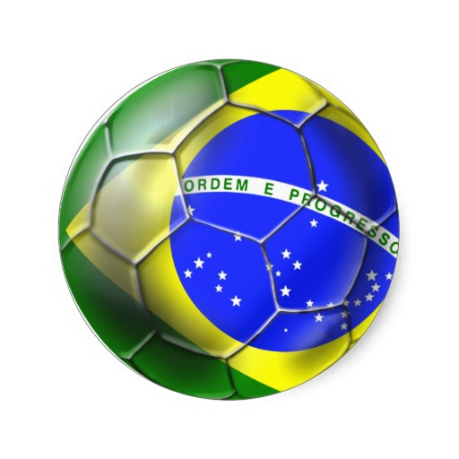
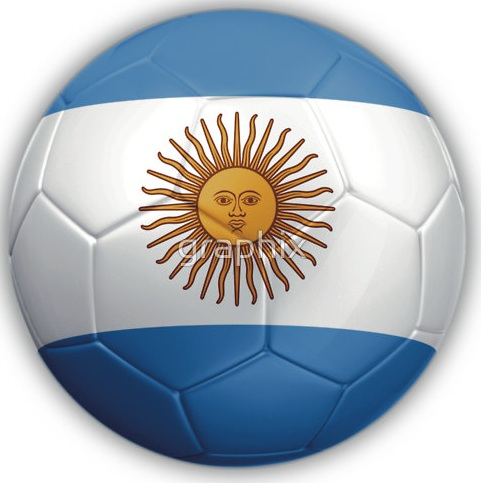
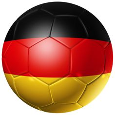
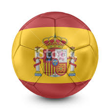

| 1. Luis Parilli  | 375 ptos |
| 2. Askhat Turlybayev | 372 ptos |
| 3. Jorge A. Gimenez | 351 ptos |
| 4. Antonio L. Gonzalez  | 349 ptos |
| 5. Jose Vivas | 349 ptos |
| 6. Tomas Zirczy  | 348 ptos |
| 7. Andres Carvajal | 347 ptos |
| 8. Valeria Rincon | 345 ptos |
| 9. Cristina Gonzalez | 343 ptos |
| 10. Leonardo Rendon | 337 ptos |
| 11. Daniel Alonzo | 336 ptos |
| 12. Manuel Godoy | 333 ptos |
| 13. Felipe Silva Ardila | 330 ptos |
| 14. Javier Ajjam | 326 ptos |
| 15. Pablo E Ruggeri | 316 ptos |
| 16. Ricardo Vielma | 313 ptos |
| 17. Luis G Parra | 313 ptos |
| 18. Nayeem Khalid | 304 ptos |
| 19. Erika Guillen | 303 ptos |
| 20. Rodrigo Feliu  | 299 ptos |
| 21. Hernando Lopez | 291 ptos |
| 22. Franco Rivero | 288 ptos |
| 23. Luis M. Otero | 282 ptos |
| 24. Gustavo Plaza | 278 ptos |
| 25. Matt Mciver | 278 ptos |
| 26. Manuel Godin | 276 ptos |
| 27. Daniel Parra | 269 ptos |
| 28. Luis Escamillo | 266 ptos |
| 29. Javier Ochoa | 259 ptos |
| 30. Jessica Gonzalez | 254 ptos |
| 31. Antonio J. Gonzalez | 251 ptos |
| 32. Javier Arturo Nunez | 233 ptos |